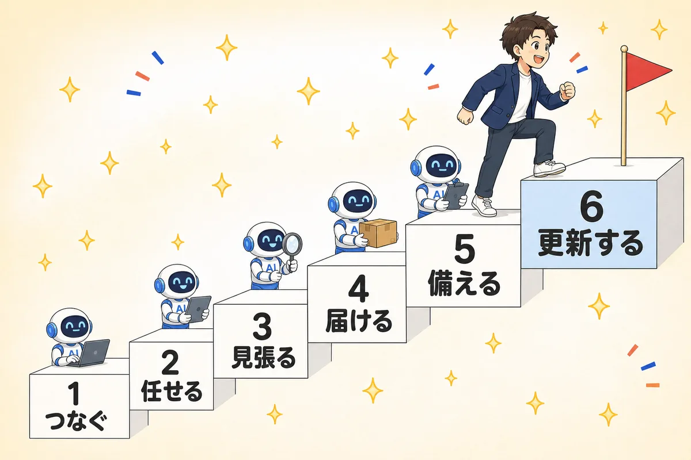
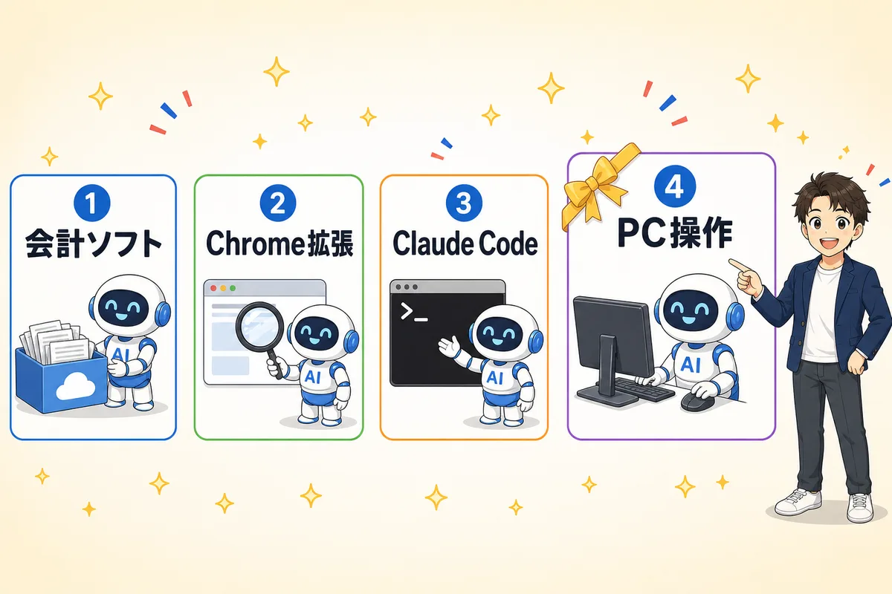

動いていたのは「ソフトの中」だけでは
ありませんでした。「PCの中」も動きました。
1ヶ月前に見ていたのは左の線だけでした。今回、右の線が動きました
アプデ①で見たのは「ソフトの中」の話でした。freee・マネーフォワード・TKC・弥生が、自社ソフトの中にAIエージェントを置きはじめた。あれから1ヶ月。もう1本の線が動きました。AIがPCそのものを操作しはじめたことです。事務所で年末調整の事前シートと、JDL（インストール型の申告ソフト）での届出書・申告書ドラフトを作らせたら、どちらも動きました。第9回で「申告書はまだ任せられません」と引いた線が、1ヶ月で動いたということです。
🎯 この回を終えると…
- 「ソフトの中のAI」と「PCの中のAI」という2本の線で、いまの状況を人に説明できる
- インストール型ソフト（JDL等）にもAIの手が届きはじめたことと、それでも動かない線が分かる
- fAD2026で見えた「作業ログの可視化」について、自分の事務所で買うか・作るか・やらないかを判断できる
- 全12回の到達度が棚卸しできて、卒業後90日でやることが3つに絞れている
この1ヶ月で動いたこと（地図のアップデート）
アプデ①から1ヶ月。地図に足すことが2つあります。1つは予定どおり（ソフトの中）、もう1つは予定になかったもの（PCの中）です。
🧭 いま動いている2本の線
| 線 | 誰が動かしているか | 届く範囲 | この1ヶ月の動き |
|---|---|---|---|
| ソフトの中 アプデ①で見た線 |
freee・マネーフォワード・TKC・弥生 | そのソフトの中の業務だけ 記帳・ルール整備・月次チェック・申告書チェック |
予定どおり前進。freeeの顧問先管理向けAIエージェントが9月15日に有償提供開始（初月50%OFF）。TKCは9月末にFX／OMSエージェント。弥生は10月に正式版の予定 |
| PCの中 🆕 今回追加 |
OpenAI・Anthropic などのAIベンダー | その画面で人ができることは、だいたい届く クラウドでも、インストール型でも |
ここが今回の本題。OpenAIが9月3日にGPT-6「Astra」を公開。目玉はPCの自動操作。APIがないインストール型ソフトにも、AIの手が届くようになりました |
- AI化が遅れていたのは、つなぎ口（API）がない業務でした。申告ソフト・給与ソフト・役所のシステム・顧問先のExcel。中身は定型なのに、人がやるしかなかった場所です
- 画面操作は、そのつなぎ口がない問題を正面から迂回します。人が画面でできることなら、原理的には届きます
- ただし遅いです。だからAPIがある業務は、これからもAPIでやります（ステップ②の原則②）
📌 つまり、アプデ①の地図はこう変わります
| アプデ①（1ヶ月前） | アプデ②（いま） | |
|---|---|---|
| 層の数 | 3層 会計ソフトのエージェント／Chrome拡張／Claude Code | 4層 ＋ PC操作エージェント |
| 届かない場所 | APIがないソフトの中 申告ソフト・給与ソフトなど | ほぼなくなりました ただし遅い・不安定・確認は必須 |
| 最後に残る線 | 提出・承認・税務判断 | 変わりません 誰が責任を持つかは1ミリも動いていません |
実験報告：AIに「年末調整」と「JDL」をやらせてみました
第9回では「申告書そのものは、まだAIには任せられません」と言いました。その線が1ヶ月で動きました。うちの事務所でやってみた2つの実験を、詰まったところも含めてそのまま共有します。
- 使ったのはcodex（Astra）（OpenAIの、PC操作ができるAI）。画面を見て、マウスとキーボードを動かすタイプです
- 対象は自分の事務所のデータ・自分のPCです。顧問先の本番環境でいきなり試してはいません
- ゴールは「提出」ではなく「ドラフトを作るところまで」。確認して確定させるのは人です
🧪 実験1：年末調整の事前シートを作らせる → できました
去年の完成品が、そのまま仕様書になりました
毎年11月、全顧問先に同じ手を動かしています。従業員ごとの前提を並べて、今年どの書類が必要かを整理した事前シートを作る作業です。
| 観点 | 結果 |
|---|---|
| 渡したもの | 前年の資料と今年の従業員の状況。指示は「去年と同じ形式で、今年の分を作って」だけ |
| 出てきたもの | そのまま顧問先に送れる水準の事前シート。前年の形式のまま、今年の変更点が反映された状態 |
| 人がやったこと | 中身の確認だけ。作る作業には手を動かしていません |
| 効いた理由 | 前年の成果物があったこと。毎年同じ形のものを作る仕事は、前年の完成品が仕様書になります |
🧪 実験2：codex（Astra）にJDLを操作させて、届出書と申告書ドラフトを作らせる → できました
APIがないソフトに、AIの手が物理的に届きました
こちらが本丸です。JDLはインストール型で、外から叩けるAPIがありません。だからAI化の話ではいつも対象外でした。それを画面操作でやらせました。
| 観点 | 結果 |
|---|---|
| やらせたこと | JDLの画面をcodex（Astra）に操作させて、①各種届出書の作成、②申告書のドラフト作成 |
| 結果 | どちらも作れました。「APIがないソフトだから無理」という前提が崩れました |
| 速さ | 速くはありません。見て・押して・確認しての繰り返しなので、人と同じか、場面によっては人より遅いです |
| それでも意味がある理由 | 速さではなく「手が空くこと」に意味があります。人が張り付く時間がゼロになると、事務所の使える時間が変わります |
| 人がやったこと | レビューと確定。ここは動いていません（原則③） |
📐 2つの実験から、はっきりしたこと
原則① 「AIには触れない領域」の多くは、能力の問題ではなく“時期”の問題でした
引き出すべきは「予測が外れた」ではなく、できない理由が“つなぎ口がない”なら、それは時期の問題として扱うということです。逆に「責任を負えないから無理」は、時期が来ても変わりません。この2つを混ぜないでください。
やること：いま諦めている作業を、つなぎ口がなくて無理／責任があって無理の2つに分けてください。前者はリストに載せておく価値があります。
原則② APIがある業務は、これからもAPIでやります（画面操作は最後の手段）
- APIがある（freee・MF会計など）→ APIで。ブートキャンプ第1回〜第7回でやってきたのがこれです
- APIはないがブラウザで動く（一部の管理画面など）→ Chrome拡張やブラウザ操作で
- インストール型でつなぎ口がない（JDL・給与ソフトなど）→ ここで初めてPC操作型を使う
原則③ 責任の所在は、1ミリも動いていません
むしろドラフトが速く出るほど、レビューが重くなります。今までは「作りながら考える」ことで自然にチェックが入っていました。作る工程が消えると、チェックの工程を意識的に作らないと、何も見ないまま確定します。
やること：第5回・第9回でやったレビュー観点のスキル化がここで効きます。速く作れる人ほど、チェックの型を先に持っている必要があります。
- 自社（自分の事務所）のデータから。顧問先データでの初回実行はしない
- 前年の完成品があるものから。年末調整の事前シートが効いたのは、前年の成果物が仕様書になったからです
- 締切から遠い時期に。申告期限の直前に新しいやり方を初投入しない
- 提出・送信ボタンには触らせない。ドラフトまでで止めて、押すのは人
- 実行前にバックアップ。画面操作型のAIは、消すこともできます
freee Advisor Day 2026 東京で拾ってきたもの
9月15日、freee Advisor Day 2026（東京）に行ってきました。会場で見て「これは自分の事務所でも使える」と思ったものを持って帰ってきたので、そのまま共有します。
🎁 おみやげ①：作業ログの見える化（みえるクラウドログ）
タブのタイトルを顧問先名で揃えるだけで、時間が自動で集まります
会場で見たのは、スタッフがいま何の作業をしているかを、ブラウザの動きから自動で記録して見える化するサービスです。仕組みはシンプルで、自作できそうだと思いました。
- ブラウザベースで作業ログを取る。どのページを、いつから、どれだけ開いていたかを記録する
- ブラウザのタブに顧問先名を表示させて、それを手がかりに集計する。ここが肝です。タブのタイトルさえ揃っていれば、「どの顧問先に何時間かかったか」が自動で集まります
- 10分に1回、画面のスクリーンショットも撮る。ログだけだと「開いていただけ」と区別がつかないので、実際の作業内容の裏取りに使う
分かりやすい使い道はスタッフの作業状況の把握で、会場でもさぼりの監視・抑制という文脈で語られていました。ただ、この道具の価値はそこではないと思っています。
- 顧問料の根拠が数字で出ます。感覚でやっていた「あそこは重い」が、月何時間という数字になります
- 自動化の効果を前後比較できます。これが無いと、自動化は「なんとなく楽になった気がする」で終わります
- ひとり事務所でも効きます。自分の時間の使い方は、誰も教えてくれません
買うか、作るか、やらないか
| 選択肢 | 向いている事務所 | コスト |
|---|---|---|
| 買う サービスを導入 | スタッフが複数いる事務所。運用を人に説明するので、作りかけだと現場が動きません。サポート窓口に価値が出ます | 月額（人数課金が多い） |
| 作る Claude Codeで | ひとり〜少人数の事務所。まずタブのタイトルを顧問先名で揃えるところだけ作って、集計は後から足すのが現実的です | 時間（数時間〜） |
| やらない | いま困っていないならやらなくていいです。「何に使うか」が決まっていないログは、ただのデータになります | ゼロ |
- 従業員の作業を記録するなら、目的を明示し、就業規則等に定めて、本人に周知するのが前提です。黙って始めるのは労務上も信頼関係の上でも避けてください。導入前に社会保険労務士・弁護士に確認を
- スクリーンショットには顧問先の情報が写ります。保存先・保存期間・閲覧できる人を先に決めてください。守秘義務の問題です。顧問先に勧めるときも同じで、目的・周知・保存ルールをセットで伝えます
- 「サボりを探す道具」として始めると、現場はログを避けるように動きます。「どこに時間がかかっているかを一緒に見る道具」として始めた方が、正確なデータが集まります
全12回を棚卸しして、卒業後90日を設計する
最終回の手を動かすパートです。全12回で何をやってきたかを1枚で見返して、自分の到達度を正直に確認し、卒業後90日でやることを3つに絞ります。ここだけはClaude Codeを開いてください。
🗂 全12回で、私たちが積み上げてきたもの
奇数回が課題つきの本編、偶数回が質疑・アップデート回という構成で進んできました。抜けている回があっても大丈夫です。戻り先が分かるように、各回のページにリンクを張ってあります。
| 回 | この回で作った状態 | 配布物 |
|---|---|---|
| 第1回 🏅自動起票デビュー |
「AIが会計ソフトを触れる」状態 口座・カードの連携、Claude Codeの導入、freee MCP接続、初めての自動起票 |
🎁 AI事務所テンプレート一式 |
| 第3回 🏅自動記帳デビュー |
「毎月の作業をAIに渡せる」状態 勘定科目ルールの2段階設計、未処理明細の一括登録、請求書のOCR起票 |
🎁 ナンピ（配布キット） 🎁 MF一括選択Chrome拡張 |
| 第5回 🏅レビューまで任せる人 |
「AIの仕事をAIに見張らせる」状態 仕訳帳と消費税区分のAIレビュー、観点のスキル化 |
🎁 レビュー観点表 🎁 スキル化の指示文 |
| 第7回 🏅月次を届ける人 |
「顧問先に届ける」状態 月次データの取得、顧問先別ダッシュボードの量産、毎月の自動配信 |
🎁 ダッシュボード生成の型 |
| 第9回 🏅申告のまわりを固める人 |
「チェックする側の型」を固めた状態 申告書PDFの結合・内訳明細のドラフト・提出前レビュー・e-Tax棚卸し（第10回で前年比較つきレビューに更新） |
🗺 税務AI自動化の現在地マップ |
| アプデ① 🏅地図を持って走る人 |
「外の状況が読める」状態 各社AIエージェントの現在地を整理し、事務所の体制（誰が何を使うか）を決定 |
🗺 3層の立ち位置マップ 🧩 Chrome拡張5種 |
| アプデ② 🏅自走する人 |
「自分で地図を更新できる」状態 PC操作型AIを地図に追加、全12回の棚卸し、卒業後90日の設計 |
🗺 4層の立ち位置マップ 📝 卒業設計プロンプト |
🪜 6段の階段になりました
アプデ①では5段でした。最終回で6段目が増えます。ここが卒業後に自分で登り続ける段です。

5段目までは教えられます。6段目は自分で登る段です
| 段 | 動詞 | 中身 | 回 |
|---|---|---|---|
| 1段目 | つなぐ | AIが会計ソフトを触れる状態を作る（MCP連携） | 第1回 |
| 2段目 | 任せる | 毎月の記帳・OCR起票をルール化して渡す | 第3回 |
| 3段目 | 見張る | AIの仕事をAIにレビューさせ、観点をスキルとして貯める | 第5回 |
| 4段目 | 届ける | 成果物を顧問先向けに量産して自動配信する | 第7回 |
| 5段目 | 備える | 申告のまわりを固め、線が動いた日の受け皿を作る | 第9回・第10回 |
| 6段目 | 更新する | できない理由を「つなぎ口」と「責任」に分けて、線が動いたら自分で拾いにいく | アプデ①・② |
今回の実験がまさにそれでした。1ヶ月前に「無理」と判断したことが、動きました。必要なのは新しいツールを全部追いかけることではなく、「いま諦めていること」をリストにしておいて、線が動いたときに拾うことです。
✋ 卒業設計をする（Claude Codeに貼ってください）
下のプロンプトをそのままClaude Codeに貼ってください。AIが質問しながら、到達度の棚卸しと卒業後90日の計画を一緒に作ります。分からないところは「分からない」で大丈夫です。
畠山式税理士AIコミュニティ（全12回）の最終回です。 卒業後90日の計画を一緒に作ってください。 私の事務所の状況を聞きながら進めてください。 【あなたの役割】 私を評価しないでください。できていないことを責めないでください。 「どこで止まったか」と「次の一手」を一緒に見つける役です。 私が答えていないことを、想像で埋めないでください。 【ステップ1：到達度の棚卸し（6段の階段）】 次の6段について、1段ずつ順番に 「この状態になっていますか？」と聞いてください。 私の答えは ◎（毎月回っている）／◯（一度はできた）／ △（途中で止まった）／✕（手をつけていない）の4段階で答えます。 △と✕のときだけ「止まった理由は何でしたか？ 時間・エラー・必要性を感じない、のどれに近いですか？」と 1回だけ追加で聞いてください。 1段目 つなぐ：AIが会計ソフトを触れる（MCP連携・自動起票） 2段目 任せる：毎月の記帳・OCR起票をルール化して渡している 3段目 見張る：AIの仕事をAIにレビューさせ、観点をスキルに貯めている 4段目 届ける：顧問先向けの成果物（ダッシュボード等）を自動で回している 5段目 備える：申告まわりのチェックの型ができている 6段目 更新する：新しくできるようになったことを、自分で拾いにいけている 【ステップ2：現実の制約を聞く】 次の3つを、1問ずつ聞いてください。 ・1週間のうち、この種の作業に使える時間はどれくらいですか？ ・スタッフは何人ですか？（ひとり事務所ならそう答えます） ・これから3ヶ月で、いちばん重たい山は何ですか？（年末調整・確定申告など） 【ステップ3：90日計画を作る】 ここまでの答えだけを根拠に、90日の計画を作ってください。 条件は次のとおりです。 ・やることは3つまで。4つ以上は出さないでください ・3つのうち1つは必ず「止まっている段のうち、いちばん下の段」から選ぶ （上の段から手をつけると、土台がないので必ず崩れるため） ・1つは「今週中に30分で終わること」にする（最初の1歩を軽くするため） ・私の使える時間を超える計画にしない。足りないなら3つではなく2つでいい ・各項目に「なぜこれを選んだか」を1行で付ける ・締切のある山（年末調整・確定申告など）の直前に、 新しいやり方を初投入する計画にしないでください 【ステップ4：諦めリストを作る】 最後に、こう聞いてください。 「いま『AIには無理だろう』と思って諦めている作業を、3つ挙げてください」 私が答えたら、その3つを次の2つに分類してください。 ・つなぎ口がないから無理（＝時期の問題。動く可能性がある） ・責任を負えないから無理（＝時期が来ても変わらない） 分類の理由も1行ずつ付けてください。 これは「次に線が動いたときに拾うリスト」になります。 【出力】 最後に、次の3つを1つのコードブロックにまとめて出してください。 ・私の到達度（6段の評価と、止まっている理由） ・90日でやること（3つまで・理由つき・最初の30分のタスクを明記） ・諦めリスト（時期の問題／変わらない問題に分類済み） これを私は自分の事務所のメモに保存します。
🔁 卒業後に続けてほしい習慣は3つだけです
| 習慣 | やること | 頻度 |
|---|---|---|
| ① 諦めリストを見返す | ステップ4のリストを開いてまだ無理かを確認する。1ヶ月で線が動くと、今回分かりました | 月1回・15分 |
| ② 自分のソフトの更新情報だけ見る | 全社を追いかけない。自分がメインで使っているソフト1社のリリースノートだけ見る | 月1回・10分 |
| ③ 観点をスキルに貯め続ける | レビューで「今回もこれを見たな」と思ったらその場でスキルに足す。ここだけは事務所の資産になります | 気づいたとき |
立ち位置マップ：3層から4層になりました
アプデ①では、道具を3層に分けました。最終回で4層目が増えます。理由は、アプデ①に自分で書いていた予想が1ヶ月で当たったからです。

4層目が増えました。③が要らなくなったわけではありません
「インポートまで自動化すると今は無理が出ます。ここはComputer Use（AIがPCの画面をそのまま操作する仕組み）が実用的になった時点で渡せると見ています。それまでは最後の一手だけ人がやる」
- ① 会計ソフトのエージェント ソフトの中で完結する共通業務。精度が高いものはそのまま使う
- ② Chrome拡張 人が画面を見て判断する場面に情報を足して補う（アプデ①で配布）
- ③ Claude Code ソフトの外に出る仕事とログを残したい処理。APIがあるものは、これからもここ
- ④ PC操作エージェント 🆕 追加 つなぎ口がない最後の場所。インストール型の申告ソフト・給与ソフト・役所のシステム。遅いので③で届かないときだけ
🧭 4層になると、担い手はこう変わります
| 仕事 | アプデ①（1ヶ月前） | いま（2026年9月） |
|---|---|---|
| ▼ ソフトに寄せていく（標準装備が追いついてくる） | ||
| 記帳 | Claude Code | Claude Code or 会計ソフトのエージェント |
| 仕訳チェック・月次レビュー | 同上 | 同上（観点は自分で足す） |
| ▼ 手元に残る（ソフトの外・APIでつなぐ） | ||
| 顧問先向けレポートの作成と配信 | Claude Code | Claude Code |
| 会計ソフトをまたぐ処理 | 同上 | 同上 |
| ▼ 🆕 ここが今回動きました（つなぎ口がない場所） | ||
| 申告ソフト（JDL等）の入力 | 手動 | PC操作エージェント ドラフトまで。確定は人 |
| 各種届出書の作成 | 手動 | 同上 |
| 年末調整の事前シート作成 | 手動 | 同上 |
| 各種システムへのExcelインポート | 手動 | 同上 |
| ▼ 動きません（技術の問題ではないため） | ||
| 提出・送信の実行 | 人 | 人 |
| 税務判断・顧問先への説明 | 人 | 人 |
| 申告書への署名 | 人 | 人 |
※ APIで届く仕事を画面操作でやると、遅くなって壊れやすくなるだけです。④は「③で届かないとき」の層です。
確認テストを受ける（合格すると恩送りメモが出ます）
ステップ①〜④が終わったら、Claude Code に先生役をお願いして、最終回の理解チェックを受けてください。70点以上で合格（何回でも再挑戦OK）。合格すると、Claudeが今回の気づきを1問ずつインタビューしてくれて、その答えがそのまま「恩送りメモ」になります。
アプデ②（最終回）の課題の理解チェックをお願いします。
内容は次の4つです。
1. この1ヶ月で動いたこと（ソフトの中の線と、PCの中の線）
2. 実験報告（年末調整の事前シート／JDLでの届出書・申告書ドラフト）と
そこから出た3つの原則
3. freee Advisor Day 2026 東京のおみやげ（作業ログの見える化）
4. 全12回の棚卸しと、卒業後90日の設計（6段の階段・諦めリスト）
合格するまで、恩送りメモは出さないでください。
【テストの進め方】
1. この課題の内容から、選択式（A/B/C）のクイズを2問 → 自由記述
（自分の言葉で説明する問題）を1問、1問ずつ順番に出して。
「できない理由を、つなぎ口がないから無理／責任を負えないから無理に
分ける」ことに関する問題を必ず1問入れて。
2. 全部答え終わったら100点満点で採点して、点数と理由を短く伝えて。
3. 70点以上で合格 → インタビューへ。70点未満なら、間違えた所をやさしく
解説してから、別の問題でもう一度出して（何回でもOK・責めないで）。
4. 選択肢に「お任せ」は付けないで（自分で考えて答えるテストのため）。
【合格したら：インタビュー】
恩送りメモの中身は、あなた（AI）が想像で書かないでください。
私の体験を聞き出して、私が話した言葉だけで作ります。
次の5問を、1問ずつ・自由入力で聞いてください
（選択式にしない・まとめて聞かない）。
Q1. 全12回を通して、自分の事務所でいちばん変わったことは何ですか？
（小さいことでOK。変わらなかったならそう答えます）
Q2. 6段の階段（つなぐ／任せる／見張る／届ける／備える／更新する）で、
いま自分はどこにいますか？ 素直な実感で答えます
Q3. 止まっている段があるとしたら、止まった理由は何でしたか？
（時間・エラー・必要性を感じない、など。責められないので正直に）
Q4. 卒業後90日でやることは、何になりましたか？
なぜそれを最初に選びましたか？
Q5. 全12回を通して、分かりづらかった所・こうしてほしかった所は
ありましたか？（1行でもOK・思いつかなければ『特になし』でOK）
インタビューのルール：
- 答えが短くても責めないで。ただし一言だけの答えには、1回だけ
「たとえばどんな場面ですか？」と具体化を促して。それでも出てこなければ、
そのまま次へ進んで。
- 「思い出せない」「特にない」と言われたら、思い出す手がかりとして、
この12回で実際に起きがちな場面を3つほど挙げて「近いものはありますか？」と
聞いてOK。ただし当てはまらなければ「なし」のまま進めて。
私が言っていないことを、あなたが代わりに書かないで。
- 私の答えを、立派な文章に書き換えないで。言い回しは私のまま、
誤字と重複だけ直す程度にして。
【恩送りメモの出力】
インタビューが終わったら、「恩送りメモ」という見出しで、チャットから
そのままコピペできる1つのコードブロックとして出力して。
・1行目は必ず「確認テスト：◯点（◯回目で合格）」にする
・続けて、私がQ1〜Q4で話した内容を、話した順に体験談としてまとめる
・最後に、Q5の答えを「💬 講座への改善案：」の行として原文のまま
入れる（『特になし』なら省略OK）
・長さは私が話した分だけでいい。8行に届かなくてもOK。足りないからといって、
私が言っていない体験・感想を足さないで。盛るくらいなら短い方がいい
※ 顧問先名・取引先名・具体的な金額・事業所名・利用者識別番号・
暗証番号・個人情報・APIキーなどの秘密情報は、メモに絶対に入れないで
（「◯◯な顧問先で」のように抽象化して）。
最後に「このメモをコピーして、課題ページの『恩送りメモを投稿して修了』に
貼れば、全12回の修了です🎉」と締めて。
恩送りメモを投稿して修了 🏅
確認テストの最後にClaudeが出してくれた「恩送りメモ」を、そのまま下に貼って投稿してください。投稿すると修了バッジが解放されます🎉 最終回のメモには「12回で自分が何段目まで来たか」と「卒業後90日で何をやると決めたか」が入ります。止まった理由を書いてくれた人のメモが、次に同じ場所で止まる人を助けます。それが恩送りです。
❓ よくあるつまずき
PC操作型のAIが出たなら、これまでの自動化は作り直しですか？
JDLを使っていません。実験報告は関係ない話ですか？
AIが申告書のドラフトまで作れるなら、私たちの仕事はどうなりますか？
作業ログを取りたいのですが、スタッフに嫌がられそうです
90日計画の3つが、どうしても多く感じます
ここに書いてある提供時期・製品情報は、いつ時点のものですか？
全12回のうち、抜けている回があります。もう受けられませんか？
途中で「使用上限に達しました」と表示されました
🏅 修了バッジ：自走する人
4つのチェック＋恩送りメモの投稿がそろうと、ここで修了バッジが解放されます。
↑ 上に戻って進める